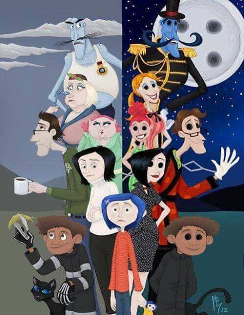

Coraline Jones: protagonista valiente.
Otra Madre: antagonista oscura.
Wybie Lovat: amigo curioso.
| Personaje | Rol | Características |
|---|---|---|
| Coraline | Protagonista | Curiosa, valiente |
| Otra Madre | Antagonista | Manipuladora, oscura |
| Wybie | Amigo | Ingenioso, leal |
| Padres | Secundarios | Ocupados, protectores |
